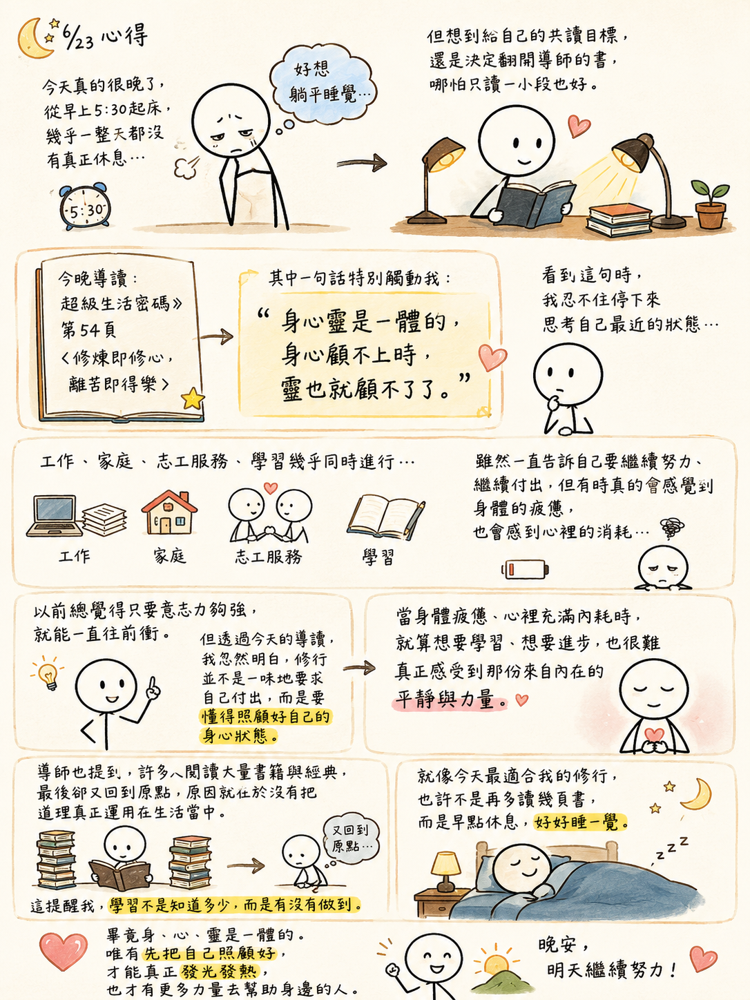

日期：2026/06/23

今天晚上其實已經很晚了，而且從早上五點半起床到現在，幾乎一整天都沒有真正休息。老實說，身體已經有點累了，甚至有一種想直接躺平睡覺的衝動。不過想到自己給自己設定的共讀目標，還是決定翻開導師的書，哪怕只讀一小段也好。
今晚導讀的是《超級生活密碼》第54頁〈修煉即修心，離苦即得樂〉。其中有一句話特別觸動我：「身心靈是一體的，身心顧不上時，靈也就顧不了了。」
看到這句時，我忍不住停下來思考自己最近的狀態。這段時間工作、家庭、志工服務、學習幾乎同時進行，雖然內心一直有一股力量告訴自己要繼續努力、繼續付出，但有時候真的會感覺到身體的疲憊，也會感受到心裡那種說不出的消耗感。
以前總覺得只要意志力夠強，就能一直往前衝。可是透過今天的導讀，我忽然明白，修行並不是一味地要求自己付出，而是要懂得照顧好自己的身心狀態。因為當身體疲憊、心裡充滿內耗時，就算想要學習、想要進步，也很難真正感受到那份來自內在的平靜與力量。
導師也提到，許多人閱讀大量書籍與經典，最後卻又回到原點，原因就在於沒有把道理真正運用在生活當中。這也提醒我，學習不是知道多少，而是有沒有做到。就像今天最適合我的修行，也許不是再多讀幾頁書，而是早點休息，好好睡一覺。
畢竟身、心、靈是一體的。唯有先把自己照顧好，才能真正發光發熱，也才有更多力量去幫助身邊的人。
晚安，明天繼續努力。